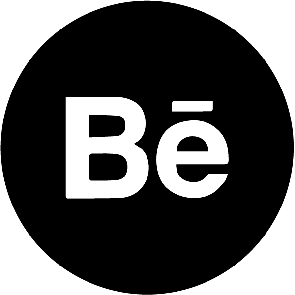

<!doctype html>
<html lang="en" dir="ltr">
<head>
<meta charset="UTF-8">
<title>Project 1 - alt</title>
<link rel="stylesheet" type="text/css" href="https://cdnjs.cloudflare.com/ajax/libs/normalize/8.0.0/normalize.min.css">
<link href="css/style.css" rel="stylesheet" type="text/css">
<link rel="preconnect" href="https://fonts.googleapis.com">
<link rel="preconnect" href="https://fonts.gstatic.com" crossorigin>
<link rel="preconnect" href="https://fonts.googleapis.com">
<link rel="preconnect" href="https://fonts.gstatic.com" crossorigin>
<link href="https://fonts.googleapis.com/css2?family=Lato:ital,wght@0,100;0,300;0,700;0,900;1,400;1,900&display=swap" rel="stylesheet">
<meta name="viewport" content="width=device-width, initial-scale=1">
<script src="https://kit.fontawesome.com/305114465b.js" crossorigin="anonymous"></script>
</head>

<body>
<header>
  <div id="navigaton">
    <div class="navtoggle" id="myNavtoggle"> <a href="index.html"></a>
      <nav>
        <ul>
          <li><a href="index.html">Work</a></li>
          <li><a href="about.html" target="_blank">About</a></li>
          <li><a href="#contact">Contact</a></li>
          <li><a href="javascript:void(0);" class="icon" onclick="menuToggle()"><i class="fas fa-bars"></i></a></li>
        </ul>
      </nav>
    </div>
  </div>
</header>
<main id="about">
  <div>
    <h1>Explorer</h1>
    <div class="project_img_lg_2">
      <picture>
        <source srcset="img/explorer/explorer_hero_sm.png" media="(max-width:767px)">
         </picture>
    </div>
    <h2>About</h2>
    <p class="smaller_para">Explorer is a responsive location based web application that helps the
    user plan the perfect trip anywhere around the world. The user can discover new travel destinations with ease and always have something new to do not matter where they are.</p>
    <div class="container">
      <h2>Tools Used</h2>
      <div class="tools_img">
        <picture>
          <source srcset="img/explorer/tools_icon_sm.png" media="(max-width:767px)">
           </picture>
      </div>
    </div>
    <div>
      <h2>Project Duration</h2>
      <p>6 weeks</p>
    </div>
    <h1>My Process</h1>
    <hr>
    <div style="background-color: white;">
      <h2>User Flow</h2>
      <p>I developed my user flow based on what my 5 Ws were and what functionality was essential to be incorporated within the application.</p>
      <div class="project_img_lg_2">
        <picture>
          <source srcset="img/explorer/user_story_vertical.png" media="(max-width:767px)">
           </picture>
      </div>
    </div>
    <div>
      <h2>Low Fidelity Wireframes</h2>
      <div class="project_img_lg_2">
        <picture>
          <source srcset="img/explorer/explorer_low fidelity_sm.png" media="(max-width:767px)">
           </picture>
      </div>
      <h2>Mid Fidelity</h2>
      <p class="smaller_para">After I developed my low fidelity wireframes, I created my mid fidelity version&nbsp; &nbsp;to get the layout coherent and added more detail to get a better idea of what the final design was going to look like.</p>
      <div class="project_img_lg_2">
        <picture>
          <source srcset="img/explorer/explorer_mid-fidelity_sm.png" media="(max-width:767px)">
         </picture>
      </div>
    </div>
    <div>
      <h2>Mood Board</h2>
		<p class="smaller_para">To help develop the overall design of the Explorer website I created a mood board. I wanted the aesthetic to be mellow and also hip. I went with a clean and modern design so that the user would not be overwhelmed when using the application. I thought it was very important to use high definition pictures and illustrations to help give the interface a polish look and feel.</p>
		<div class="project_img_lg_2">
		<picture>
          <source srcset="img/explorer/explorer_moodboard_sm.png" media="(max-width:767px)">
       </picture>
			</div>
		<hr>
    </div>
    <h2>Final Screen Designs</h2>
    <div class="project_img_lg_2">
      <picture>
        <source srcset="img/explorer/explorer_responsive_sm.png" media="(max-width:767px)">
         </picture>
    </div>
    <h2>Home Page</h2>
    <p class="smaller_para">The home page will have the user’s current location set and will suggest activities, resturants, and different destinations so the user always has somewhere to go.</p>
    <div class="project_img_lg">
      <picture>
        <source srcset="img/explorer/explorer_home_sm.png" media="(max-width:767px)">
         </picture>
    </div>
    <h2>Discover Page</h2>
    <p class="smaller_para">Search for new places to go and add them to your custom trip list.</p>
    <div class="project_img_lg">
      <picture>
        <source srcset="img/explorer/explorer_discover_sm.png" media="(max-width:767px)">
         </picture>
    </div>
    <h2>Destination Page</h2>
    <p class="smaller_para">User will be able to see all the essential information for each&nbsp; location. The user also will be able to get a 24 hour live feed to see what people have posted to see what’s going on there.</p>
    <div class="project_img_lg">
      <picture>
        <source srcset="img/explorer/explorer_destination_sm.png" media="(max-width:767px)">
         </picture>
    </div>
	  <h2>Trip Overview Page</h2>
    <p class="smaller_para">The user can create trips and have all information that they need at hand saved in one location. This includes: flight information, saved restaurants, shops and parks.</p>
	 <div class="project_img_lg">
      <picture>
        <source srcset="img/explorer/explorer_trip_sm.png" media="(max-width:767px)">
        </picture>
    </div>
    <p class="smaller_para">Multiple trips can be saved and created so that the user will always be prepared for a new&nbsp; destination.&nbsp;</p>
    <h2>Retrospective</h2>
    <p class="smaller_para">The creation of the Explorer app was an up and down journey that gave me a lot of insight on user interface development. I learned how to create a unique location based application in an already saturated market. Geve it some key functionalities such as trip creations and user stories that would seperate it from other location based applications. </p>
    <p class="smaller_para"> I also learned how to design for multiple platforms and how to make the userface work on all screen sizes so the user always has a great experience using the website.</p>
  </div>
</main>
<footer id="contact">
  <div>
    <h2>Get in Touch</h2>
    <p> Do you like my work and want to discuss opportunities? 
      Please get in touch. Call: <a href="#">631-903-4512</a> or Skype me at blank. 
      Prefer sending an email? </p>
    <div class="container"> <a href="mailto:dcostanz93@gmail.com" class="button contact">send email</a> </div>
    <div id="social_icons">
      <ul>
      <li class="social_id"><a href="https://www.instagram.com/everyday_dom/" target="_blank"> </a></li>
      <li class="social_id"> <a href="https://www.behance.net/dominickcostanzo" target="_blank">  </a> </li>
      <li class="social_id"> <a href="https://dribbble.com/DomCostanzo" target="_blank">  </a> </li>
		 <li class="social_id"> <a href="https://www.linkedin.com/in/domcostanzo/" target="_blank">  </a> </li>
    </ul>
    </div>
    <p>Copyright Dominick Costanzo 2020-2021</p>
  </div>
</footer>
	<script
  src="https://code.jquery.com/jquery-1.12.4.min.js"
  integrity="sha256-ZosEbRLbNQzLpnKIkEdrPv7lOy9C27hHQ+Xp8a4MxAQ="
  crossorigin="anonymous"></script> 
<script src="js/scripts.js"></script>
</body>
</html>
